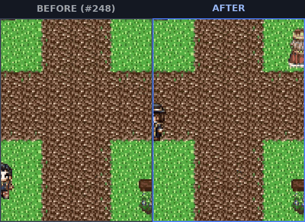
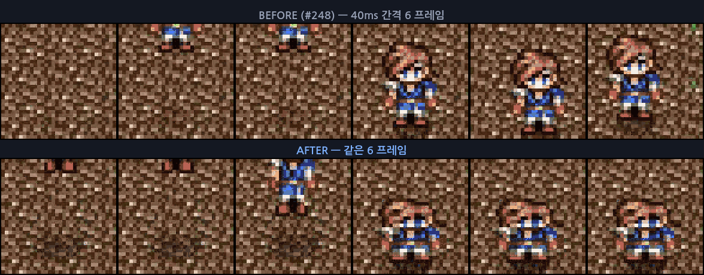
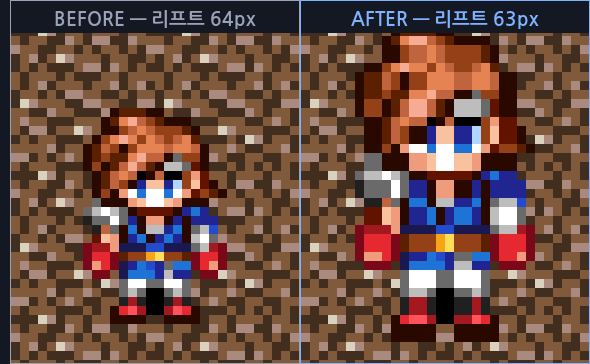
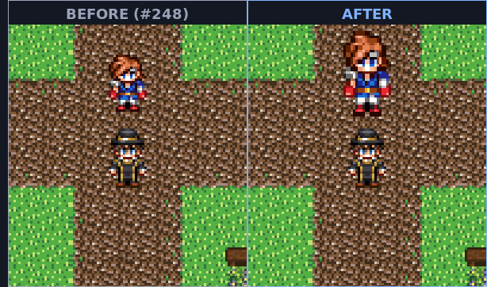
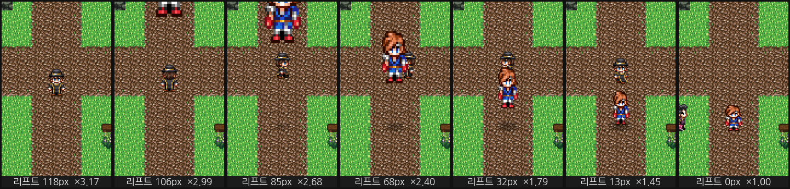
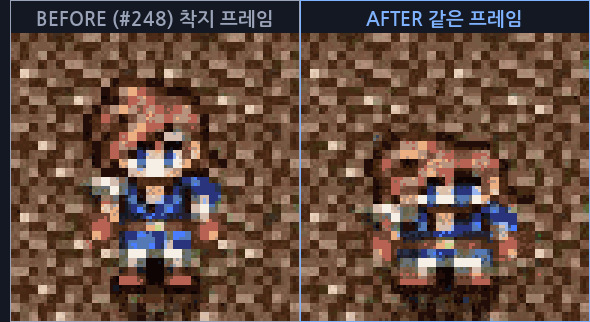

낙하가 "떨어진다" 로 읽히게 — 헤드스타트 · 원근 · 스쿼시 · 그림자 기준높이
#248 이 체공을 만들었지만 8 칸 낙하가 "위쪽 타일에서 걸어 내려온다" 로 읽혔다. 리프트 하나만 움직이는 강체 이동에는 무게가 없다. 같은 높이·같은 시간의 낙하를 이전 커밋과 나란히 녹화해 대조하고, 배율·그림자 값을 런타임에서 직접 읽어 곡선을 검산했다.
1. 무엇이 문제였나
탑다운에서 화면상 세로 이동은 북·남으로 걷는 것과 픽셀 변화가 같다. 리프트만 올리면 8 칸 낙하와 "위 타일에서 걸어 내려오기" 가 구분되지 않는다. 높이를 주장하는 신호가 발밑 그림자 하나뿐이었기 때문이다.
그런데 그 그림자도 사실상 죽어 있었다. 그림자 크기·알파는 liftPx / (TILE_SIZE × 2) 로 정규화됐다. 기본 낙하 128px 에서 리프트가 32px 안으로 들어오는 건 마지막 13% 구간(620ms 중 83ms) 뿐이라, 나머지 87% 동안 그림자는 최소 크기·최소 알파에 붙어 있었다. "다가온다" 를 전혀 못 준다.
낙하 곡선 자체도 눈에 불리했다. 초속 0 인 순수 1−p² 는 앞 절반(310ms)에 32px, 전체의 25% 만 내려온다. 화면에서는 위쪽에 붙어 어물거리다 마지막에 훅 지나가 "떨어진다" 보다 "사라진다" 로 읽힌다.
2. 나란히 대조
같은 프로젝트·같은 타일·같은 저작값(dropIn heightPx 128 · durationMs 620)으로 두 커밋을 각각 녹화하고, 첫 공중 프레임을 기준으로 정렬해 좌우로 붙였다. 25fps 로 표본화한 35 프레임이다.
아래 GIF 넷과 perspective-*.png 은 낙하를 ×3 으로 가르기 전의 캡처다(13:41~13:49, 상수 변경은 15:26). 그래서 "오른쪽 현재" 는 지금 빌드보다 작다 — 헤드스타트·스쿼시·그림자 기준높이 세 채널의 대조로는 유효하지만, 낙하 스프라이트 크기의 현재값은 아니다. 지금 크기는 3.2b 의 스트립(16:15)을 봐야 한다. 다시 찍지 않은 이유는 대조 상대인 기준 커밋 녹화까지 같이 다시 떠야 해서다 — 비용이 그림 한 장 값이 아니다.


3. 네 채널
3.1 낙하 헤드스타트 — 자유낙하 곡선의 중간부터 자른다
dropIn 은 화면 밖에서 떨어져 들어오는 등장 연출이라, 등장 순간의 속도가 0 인 것이 오히려 비물리적이다. u = p₀ + (1−p₀)p 로 곡선을 p₀ 지점부터 시작하면 가속도는 등가속 그대로이면서 초속만 붙는다.
FALL_HEAD_START = 0.45
fallLiftPx(p) = height × (1 − u²) / (1 − p₀²), u = 0.45 + 0.55p| 진행 | #248 리프트 | 현재 리프트 | 내려온 양 |
|---|---|---|---|
p = 0.25 | 120px | 105px | 6% → 18% |
p = 0.50 | 96px | 76px | 25% → 41% |
p = 0.75 | 56px | 41px | 56% → 68% |
총 시간은 그대로 620ms 다. 곡선의 모양만 바뀌어서 앞 절반에 볼 것이 생긴다.
3.2 원근 — 공중에 있는 동안 스프라이트를 키운다
크기 변화만이 "지면 위의 먼 곳" 과 "카메라에 가까운 공중" 을 구분한다. 리프트 비율에 선형으로 최대 35% 를 얹는다.
HOP_PERSPECTIVE_MAX = 0.35
배율 = 1 + 0.35 × gate(시작높이 / 4칸) × (현재리프트 / 시작높이)핀홀 모델(D/(D−lift))을 쓰지 않은 이유: ds/dlift 가 높은 곳에서 최대라 성장분을 화면 밖에서 다 써버리고, 정작 착지 직전 구간에서는 크기가 거의 멈춘다. 리프트에 선형이면 낙하 곡선의 등가속이 그대로 실려 눈이 보고 있는 구간에서 변화가 일어난다.

1.264 × 1.482 로 커져 있다. 발밑 앵커는 hopOriginY 가 scaleY 로 나누기 때문에 배율과 무관하게 유지된다: 스프라이트는 위로만 커지고 접지선은 흔들리지 않는다.
3.2b 낙하만 ×3 — 35% 는 "등장" 으로 안 읽혔다
위 35% 는 점프의 값이다. 같은 값을 dropIn 에 걸어 놓고 보니 8 칸 낙하가 ×1.35 로 들어와서, "높은 데서 떨어진다" 가 아니라 "약간 큰 캐릭터가 내려온다" 로 읽혔다. 그래서 채널은 공유하고 상수만 갈라 놓았다.
HOP_PERSPECTIVE_MAX = 0.35 게이트 4 칸 → 점프 최대 ×1.35
FALL_PERSPECTIVE_MAX = 2 게이트 8 칸 → 낙하 최대 ×3게이트를 8 칸으로 둔 이유는 DEFAULT_FALL_HEIGHT_PX 와 같게 맞춰 기본 낙하가 정확히 ×3 이 되게 하려는 것이다. 더 낮게 저작한 낙하는 비례해 줄어든다 — 2 칸 낙하가 ×3 으로 부풀면 높이 정보가 거짓이 된다. 점프를 같이 올리지 않은 이유: 점프는 캐릭터가 계속 화면에 있는 이동 수단이라, ×3 을 걸면 걸어 다니다 뛸 때마다 화면이 줌하는 것처럼 보인다.

pxPerWorld 3)에서 캐릭터 주변만 잘랐다. 배율은 계측값이고 리프트도 같은 프레임에서 읽었다. 오른쪽 세 장에서 옆 NPC 와 비교하면 크기 차이가 캐릭터에만 걸린 것을 확인할 수 있다 — 접지선은 hopOriginY 보정으로 일곱 장 모두 같은 자리다.카메라는 sprite.y 를 따르고 리프트는 sprite.y 를 건드리지 않는다(원점으로만 올린다). 그래서 8 칸 위에서 시작하면 발밑이 카메라 위 끝을 넘는다: 계산하면 리프트 120px 이상에서 스프라이트가 완전히 화면 밖이고, 위 스트립 첫 장(118px)에 부츠만 걸려 있는 게 그 경계다. 머리까지 다 들어오는 것은 리프트 50px 아래부터다.
시간으로는 짧다. 낙하 곡선이 헤드스타트를 받아 1−u² = 0.7975 × 리프트/높이, u = 0.45 + 0.55p 이므로 리프트 120px 은 진행률 9.5% — 기본 620ms 낙하에서 약 59ms, 60fps 로 3~4 프레임이다. 등장 연출로는 오히려 맞는 그림이라 그대로 뒀다. 다만 낙하 시작 프레임을 UI 로 강조하려는 저작은 이 구간을 못 쓴다.
3.3 스쿼시 · 스트레치 — 빠를 때 늘고, 닿을 때 눌린다
스트레치는 속도에, 원근은 높이에 걸린다. 서로 다른 축의 정보라 곱해서 한 값으로 넘긴다. 스트레치는 세로로 늘린 만큼 가로를 0.6 배로 줄여 부피가 유지되는 것처럼 보이게 하고, 원근은 가로·세로가 같다(거리이지 부피가 아니다).
hopAirScale = hopStretchScale(속도) × hopPerspectiveScale(높이)
HOP_STRETCH_MAX = 0.22 HOP_SQUASH_MAX = 0.26 HOP_SQUASH_MS = 150착지 프레임은 즉시 1.182 × 0.740 으로 눌러 놓고 150ms 동안 Back.easeOut 으로 원래 배율까지 튀어 돌아온다.

(0.5, 1) 이라 발밑을 축으로 눌려서 접지선이 위로 튀지 않는다.page.screenshot() 이 150~300ms 걸리는데 스쿼시가 150ms 다. 셔터가 닫히기 전에 이미 복구돼서, 계측값은 1.182 × 0.740 인데 파일에는 똑바로 선 캐릭터가 찍힌다. 위 두 그림은 영상 프레임에서 뽑았다. 계측과 픽셀을 같은 도구로 잡으려 하면 안 되는 경우다.
3.4 그림자 기준높이 — 그 체공의 시작 높이로 정규화한다
고정 2 칸 대신 호출부가 그 체공의 시작 높이를 넘긴다. 하한을 기존 2 칸으로 두어 짧은 홉에서는 곡선이 예전과 같다.
syncCharacterShadow(..., liftPx, hop.liftPx)
t = liftPx / max(TILE_SIZE × 2, referenceLiftPx)4. 계측 — 런타임에서 읽은 값과 공식 검산
4 칸(64px) 낙하를 느리게 돌리며 여섯 고도에서 멈춰 __oprnDebug 로 배율과 그림자 지름을 직접 읽었다. 배율은 진행률·리프트 비율만의 함수라 느리게 찍어도 값이 같다.
| 리프트 | #248 배율 | 현재 배율 | #248 그림자 ⌀ | 현재 그림자 ⌀ |
|---|---|---|---|---|
| 63px | 1.000 × 1.000 | 1.264 × 1.482 | 11.2 | 11.4 |
| 52px | 1.000 × 1.000 | 1.186 × 1.453 | 11.2 측정 | 13.5 |
| 40px | 1.000 × 1.000 | 1.104 × 1.408 | 11.2 | 16.0 |
| 27px | 1.000 × 1.000 | 1.025 × 1.354 | 13.2 | 18.6 |
| 16px | 1.000 × 1.000 | 0.960 × 1.303 | 17.6 측정 | 20.8 |
| 6px | 1.000 × 1.000 | 0.903 × 1.253 | 21.6 | 22.7 |
| 착지 | 1.000 × 1.000 | 1.182 × 0.740 | 숨김 | 숨김 |
#248 배율·#248 그림자 는 같은 리프트에서의 이전 공식값이고, 측정 표시된 두 칸은 이전 커밋을 실제로 돌려 같은 값(11.2 · 17.5)을 받아 확인했다. 이전 커밋의 그림자는 리프트 32px 이상 전 구간에서 11.2px 에 고정이다.
현재 값은 공식과 소수 셋째 자리까지 맞는다. 리프트 63px 에서 speedRatio 0.4636 · 원근 1.3445 로 계산하면 1.2622 × 1.4817, 계측은 1.2637 × 1.4821 이다.
표에서 읽을 수 있는 두 가지. 그림자는 최고점에서 두 커밋이 거의 같고(11.2 대 11.4) 내려오면서 벌어진다 — 기준높이 변경이 노리는 구간이 정확히 거기다. 그리고 접지 직전 scaleX 가 0.903 으로 1 보다 작아진다: 원근이 다 빠진 뒤에는 부피 보존 스트레치만 남아 홀쭉하고 길어지고, 그 다음 프레임에 1.182 × 0.740 으로 납작해진다. 늘어남에서 눌림으로 넘어가는 이 반전이 충격을 만든다.
5. 함정 둘 — 호출 순서와 기준 배율
applyCharacterLift 는 그 시점의 scaleY 로 원점을 나눈다(originY = 1 + liftPx / (height × scaleY)). 스케일을 나중에 바꾸면 리프트가 세로 배율만큼 어긋난다. #248 이 남긴 계약(setFrame 뒤에 리프트)에 한 겹이 더 붙어, 이제 setFrame → setScale → 리프트 순서다.
스트레치는 매 프레임 base × factor 로 덮어쓴다. 기준을 프레임마다 스프라이트에서 읽으면 직전 프레임의 늘어난 값이 기준이 되어 계속 커진다. 체공 시작 프레임에 한 번 붙잡아 characterHopScales 에 넣고, 그림자 풀과 같은 키를 쓴다. 절대값 대신 기준에 곱하는 이유는 저작 스케일이 걸린 스프라이트에서 스쿼시가 끝난 뒤 원래 크기를 잃지 않게 하려는 것이고, test/characterHop.test.ts 가 그 성질을 잠근다. 다만 이 풀의 수명을 접지 시점으로 잡은 것이 아래 6 절의 결함이었다.
정리 경로도 함께 넓혔다. 맵 전이·런타임 리셋은 clearAllHopScales 로 풀을 비우고, 중단(abortHop)은 진행 중인 스쿼시 트윈을 killTweensOf 로 끊고 기준 배율로 되돌린다. 스쿼시는 화면 흔들림·먼지와 같은 급의 모션이라 reduced-motion 이면 임팩트와 함께 빠진다 — plan.dust 와 운명을 같이 한다.
착지 임팩트도 같이 세졌다
흔들림 상한을 0.012 → 0.018(320×240 에서 약 4px), 길이 상한을 150 → 180ms 로 올려 8 칸 낙하가 액션 전투 피격보다 세 배 무겁게 읽히게 했다. 먼지는 두 겹이 됐다 — 한 겹만 퍼뜨리면 "그림자가 커졌다" 로 읽혀서 착지 순간이 안 보인다. 짧고 진한 코어(220ms)와 넓고 옅고 느린 링(360ms)으로 나누면 터지는 타이밍이 잡힌다. 새 스프라이트시트 없이 그림자 텍스처를 재활용한다.
그리고 먼지 지름도 높이에 붙였다. 낙하가 시작 배율 ×3 을 받게 된 뒤로, 8 칸에서 떨어진 캐릭터 밑에 1 칸 홉과 같은 크기의 구름이 피면 충격이 안 실렸다. 흔들림·소리와 같은 impactStrength 를 쓰므로 세 신호가 같은 높이에서 함께 커진다.
impactStrength = clamp((리프트 − 16) / 48) // 1 칸 아래는 0, 4 칸에서 포화
코어 지름 = 1.6 + 1.0 × strength // 1.6 → 2.6
링 지름 = 2.6 + 1.8 × strength // 2.6 → 4.4| 착지 리프트 | strength | 코어 | 링 | 비고 |
|---|---|---|---|---|
| 16px (1 칸) | 0 | — | — | 임팩트 없음 — 제자리 홉마다 화면이 흔들리면 멀미난다 |
| 32px (2 칸) | 0.333 | ×1.93 | ×3.20 | — |
| 48px (3 칸) | 0.667 | ×2.27 | ×3.80 | 저작 점프 최고점과 같은 높이 |
| 64px 이상 (4 칸+) | 1 | ×2.60 | ×4.40 | 포화 — 기본 8 칸 낙하가 여기다 |
즉 기본 낙하의 먼지는 최소 임팩트 착지보다 코어 63% · 링 69% 넓다. 낮은 홉의 그림은 strength 0 부근에서 이전 값(1.6 / 2.6)과 같으므로 변하지 않는다 — 커지는 것은 높은 낙하뿐이다.
코어가 220ms 인데 page.screenshot() 이 150~300ms 다. 접지를 감지하고 셔터를 여는 순간 이미 트윈이 끝나 있어서, 착지 직후 연속 4 장에 먼지가 한 픽셀도 없다(스쿼시와 같은 이유·같은 한계다). 대신 landingImpactPlan 이 순수 함수라 위 표 전체가 test/characterHop.test.ts 에 잠겨 있다: strength 0 → dustEndScale 0, 4 칸·12 칸 → 2.6 / 4.4 로 포화, 그리고 항상 링 > 코어. "먼지가 커 보인다" 는 눈으로 확인하지 못했고, "먼지 지름이 커진다" 만 확인했다.
6. 검증
| 항목 | 결과 | 비고 |
|---|---|---|
typecheck:app | 통과 | — |
| 변경 표면에 닿는 15 파일 (115) | 통과 | characterHopRuntime·characterHop·characterLanding·characterShadow·playSceneMovement·playSceneTestHooks 를 참조하는 테스트 전부 |
characterHop (26) | 통과 | 헤드스타트·원근·스쿼시 곡선, 기준 배율 곱셈, 게이트 하한 · 낙하 ×3 분기와 먼지 지름 표를 잠그는 3 개 추가 |
hopSquashCarryover (2) | 보류 | 아래 결함의 회귀 게이트 — 고침 전에는 둘 다 빨갛다. 다만 이 결함은 main 이 98969996 으로 이미 독립적으로 고쳤고 회귀 테스트(characterHopChainedScale)도 있다. 중복이라 이 변경에서 빼기로 했다 — 아래 「이미 고쳐져 있었다」 참조 |
characterHopChainedScale (2) main | 통과 | main 의 회귀 테스트가 이 변경(×3·먼지) 뒤에도 녹색 — 원근 상수를 키운 것이 기존 수정을 깨지 않는다 |
qa:runtime -- --scenario hop | 6/6 | 비트 9 개, 런타임 에러 없음 · 수정 전 5 회 중 2 회 실패 |
| 전체 vitest 스위트 | 통과 | npm test 단독 실행, 종료 코드 0 · 앞선 회차의 실패 170 건은 QA 반복 실행과 동시에 돌려 워커 타임아웃이 난 것이었다 — 부하를 없애니 사라졌다. 로그를 tail 로 받아 파일·테스트 합계는 캡처하지 못했다(판정은 종료 코드) |
스위트 실행 후 git status | 깨끗 | 아래 「추적 대상 소스를 덮어썼다」 관측이 이번엔 재현되지 않았다 — defaultDatabaseBattleRecords.ts 349 줄 그대로, 작업 트리에 내 변경 7 파일 + 신규 테스트뿐 |
게이트를 반복 실행해서 나온 셋
보고서에 "게이트 통과" 를 쓰려고 같은 시나리오를 여러 번 돌렸다. 한 번만 돌렸으면 셋 다 못 봤다. 둘은 주장 쪽 문제(플레이크)였고, 하나는 이 변경이 심은 실제 결함이었다.
playerShadowGroundY 의 허용오차가 드롭 프레임 한 장 폭이었다
3 회 중 1 회 기대 336, 실제 334.932. 이 변경 탓이 아니다: 타원 아래 끝은 groundY − 16·scale·0.5 + 16·scale·0.5 로 배율이 정확히 소거되므로, 그림자 크기·알파만 바꾼 diff 는 이 값을 움직일 수 없다.
원인은 주장의 구조다. 접지 뒤에 남는 값은 숨기기 직전 마지막 프레임의 위치인데, 점프는 groundY 를 프레임마다 선형 보간하고 리프트가 0 이 되는 마지막 프레임은 완료 분기로 빠져 그림자를 갱신하지 않는다. 그래서 남는 값은 목적지보다 항상 16px × 마지막 프레임 간격 비율 만큼 짧다. 1200ms 점프에서 1px 이내이려면 마지막 프레임 간격이 37.5ms 아래여야 한다 — 60fps(16.7ms)면 남지만 프레임 한 장만 흘려도 넘는다. 실패한 런의 간격은 40.03ms 였다. 주장의 뜻은 "그림자가 착지 타일까지 따라왔다" 이므로 타일(16px)보다 훨씬 작은 2px 로 넓혀 뜻은 지키고 프레임 한 장은 견디게 했다.
jump-apex 는 경합이 둘이라 5 회 중 2 회 빨갰다
부하 없는 상태에서도 실패했다. 증상이 두 가지였다. ① heightPx: 48 점프에서 최고점 창을 아예 못 잡고 30 초 타임아웃(리프트 0, 접지 상태). ② 기다림은 성공했는데 뒤이어 읽은 값이 38px.
| 증상 | 경합 | 고침 |
|---|---|---|
| ① 타임아웃 | 앞 비트가 저고도 띠를 minPx 4, maxPx 14 로 기다린다. 포물선은 그 띠를 오르며·내리며 두 번 지나므로 내려오는 쪽을 잡을 수 있고, 그러면 최고점은 이미 지나갔다 |
상한을 없앤다. 하한만 두면 리프트가 0 에서 올라오므로 첫 만족 표본이 항상 상승 구간이다 |
| ② 38px | "기다린 뒤 읽는" 구조인데 읽기 지연(스크린샷 150~300ms)이 1200ms 비행의 25% 다. 기다림이 ≥40 에서 풀린 뒤 읽는 동안 포물선이 내려온다 |
점프를 1200 → 4000ms 로 늘려 같은 지연을 7% 로 줄이고, 기다림은 ≥40 으로 두되 뒤에 읽는 기대값만 ≥30 으로 낮춘다 |
둘 다 durationMs 와 대기 조건의 문제이고 체감 코드와 무관하다. 수정 후 6 연속 통과.
jump-apex 를 파다가 배율 채널을 의심해 단위 테스트로 재현을 시도했고, 거기서 진짜가 나왔다. 시나리오는 낙하 착지 직후 점프를 쏜다. 스쿼시가 150ms 라 그 사이에 점프가 시작되면 두 가지가 동시에 깨진다.
| # | 무엇이 | 왜 |
|---|---|---|
| 1 | 원점과 배율이 어긋난다 | 살아남은 스쿼시 트윈이 매 프레임 scaleY 를 계속 쓴다. applyCharacterLift 는 그 시점 scaleY 로 나눠 원점을 넣어 뒀으므로, 나중에 배율이 바뀌면 화면에 실린 리프트가 저작 높이와 달라진다 |
| 2 | 눌린 중간값이 새 기준이 된다 | 기준 배율 풀을 접지 시점에 비웠다. 스쿼시가 도는 동안 다음 체공이 시작되면 풀이 비어 있어, rememberHopBaseScale 이 눌려 있는 현재 배율을 기준으로 붙잡는다. 저작 배율 2 인 스프라이트가 2.364 × 1.48 을 기준으로 삼아 점프 내내 납작하고 넓었다 |
고침은 풀의 수명을 접지에서 스쿼시 트윈 종료로 옮기는 것이다. 트윈이 끝날 때 기준을 버리고, 그 전에 새 체공이 오면 트윈만 세우고 기준을 물려준다. 세울 때 killTweensOf(sprite) 를 쓰지 않고 우리가 만든 트윈 핸들의 stop() 만 부른다 — 같은 스프라이트를 미는 넉백 트윈까지 죽이면 안 되기 때문이다. 중단 경로(abortHop)는 스프라이트가 사라지는 길이라 예전처럼 전부 끊는다.
재현을 먼저 테스트로 고정한 뒤 고쳤다. test/hopSquashCarryover.test.ts 는 Phaser 트윈이 매 프레임 배율을 쓰는 것까지 흉내내서, 고침 전에는 리프트 51px(기대 48px)과 기준 2.985(기대 2.525)로 두 주장이 모두 빨갛다. 부하와 무관하게 결정적으로 재현된다.
커밋을 준비하다가 알았다. 이 브랜치(hop-feel)는 이미 main 에 병합됐고 455 커밋 뒤처져 있었고, 그 사이 main 이 같은 결함을 98969996 「연속 체공이 눌린 배율을 영구 기준으로 굳히던 결함을 고친다」 로 독립적으로 고쳐 두었다. 회귀 테스트도 있다(test/characterHopChainedScale.test.ts). 낡은 기준점 위에서 작업하면서 확인하지 않은 대가다 — 브랜치가 병합됐는지부터 봤어야 했다.
main 의 98969996 | 이 작업(폐기) | |
|---|---|---|
| 기준을 지키는 방법 | 스쿼시가 시작되면 기준을 풀에 다시 넣는다 (scalePool.set(key, base)) | 기준의 수명을 트윈 종료로 옮긴다 (onComplete 에서 버린다) |
| 남은 트윈 처리 | killTweensOf(sprite) | 트윈 핸들 하나만 stop() |
| 크기 | 순증 6 줄 | 맵 하나 추가 + 타입 1 개 export |
결론: main 의 것을 그대로 둔다. 이미 병합돼 테스트까지 있는 수정을, 더 크고 손이 많이 가는 구현으로 재작성할 이유가 리뷰 부담을 넘지 않는다. 그래서 characterHopRuntime.ts·playSceneTypes.ts·test/hopSquashCarryover.test.ts 는 올리지 않는다.
killTweensOf 의 부수효과
main 의 수정은 캐시 히트에서 killTweensOf(sprite) 를 부른다. 이게 같은 스프라이트를 미는 남의 트윈까지 죽인다. 대상이 겹칠 수 있다: playSceneAutonomous 가 이벤트 스프라이트에도 홉을 걸고(applyHopFrame(scene, eventId, sprite, …)), playSceneActionCombat:1044 의 넉백도 같은 scene.eventSprites 를 민다. 겹치면 넉백 트윈의 onComplete 가 안 돌아 enemy.knockbackTween 이 undefined 로 안 풀리고 최종 setPosition 도 생략돼, 스프라이트가 논리 타일과 어긋난 자리에 남는다.
재현하지 않았다 — 코드만 읽고 낸 결론이다. 조건도 좁다(액션 전투 적 + 그 적에 홉 저작 + 착지 스쿼시 150ms 안에 넉백). 이 변경에 끼워 넣지 않고 관찰로만 남긴다.
이 결함이 jump-apex 의 33px 관측을 만든 것인지는 확인하지 못했다. 고친 뒤에도 jump-apex 는 같은 빈도로 빨갰고, 위 두 경합만으로 증상이 전부 설명된다. 결함은 단위 테스트로 독립적으로 증명됐으므로 그 자체로 고칠 값이 있지만, "게이트가 이 결함을 잡았다" 고 쓰는 것은 사실이 아니다. 게이트는 배율 채널을 들여다보게 만들었을 뿐이다.
7. 알아 둘 것
영상 비교의 정렬 기준. 두 녹화는 벽시계로 맞출 수 없다(로딩·시드 시간이 다르다). 첫 공중 프레임을 원점으로 잡아 붙였다. 저작값이 같고 durationMs 가 곡선 모양과 독립이라, 같은 프레임 번호는 같은 진행률을 뜻한다.
정지 스틸과 영상의 역할이 다르다. 배율·그림자 숫자는 스틸 캡처의 계측으로, 150ms 스쿼시의 그림은 영상 프레임으로 잡았다. 스크린샷 지연(150~300ms)이 스쿼시보다 길어서 한 도구로는 둘 다 못 잡는다.
vitest run test/ 한 회차 뒤에 src/project/defaults/defaultDatabaseBattleRecords.ts 에서 231 줄이 사라져 있었다(적 레코드 enemy_extra_006 이후 전부). 체공과 무관하고 내가 편집한 파일도 아니다. 되돌렸다. 이름으로 그 파일을 쓰는 테스트는 없어서 범인은 경로를 계산해 쓰는 쪽으로 보이는데, 유력 후보 둘(generatedEnemyBattlers·actionEnemyAuthoring)을 단독 실행해도 재현되지 않았다. 추적하지 못했다 — 전체 스위트를 돌린 뒤에는 git status 를 확인하는 편이 좋다.
후속. 부하 없이 스위트를 다시 완주(종료 코드 0)한 뒤 git status 는 깨끗했다. 그 회차가 워커 타임아웃이 난 회차와 같은 회차였으므로, 원인은 테스트 코드 자체보다 중단된 워커 쪽일 가능성이 커졌다. 다만 한 번 안 났다고 없는 문제는 아니다 — 재현 조건을 못 잡았으니 확인 습관은 남긴다.
남은 것. 점프(jump)는 헤드스타트를 받지 않는다 — 포물선은 이·착지에서 이미 최대 속도라 필요가 없다. 스트레치는 점프에도 걸리지만 기본 12px 홉은 게이트에 막혀 사실상 중립이다. 저작으로 높이를 키운 점프에서 스트레치가 과한지는 아직 실사용 표본이 없다.
확인하지 못한 것 둘. ① 먼지가 커 보이는지는 눈으로 못 봤다 — 지름 공식만 잠갔다(5 절 「착지 임팩트도 같이 세졌다」). ② ×3 이 과한지는 판단하지 않았다. 스트립을 보면 캐릭터가 옆 NPC 의 두 배 넘게 커지는데, 이게 "높은 곳에서 온다" 로 읽힐지 "스프라이트가 깨졌다" 로 읽힐지는 취향 문제라 저작자 표본이 필요하다. 되돌리려면 FALL_PERSPECTIVE_MAX 한 줄이다.